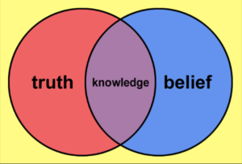

2.2 Epistemologia e teorias da aprendizagem



2.2.1 O que é epistemologia?
No cenário do jantar, Stephen e Caroline tinham crenças bastante diferentes sobre a natureza do conhecimento. A questão aqui não é quem estava certo, mas que todos nós temos crenças implícitas sobre a natureza do conhecimento, o que constitui a verdade, como essa verdade é melhor validada e, da perspectiva do ensino, como melhor ajudar as pessoas a adquirir esse conhecimento. A base dessa crença variará dependendo da matéria em questão e, em algumas áreas, como as ciências sociais, até mesmo dentro de um domínio comum de conhecimento.
Nossa escolha de abordagens de ensino e até mesmo o uso da tecnologia dependem absolutamente das crenças e suposições que temos sobre a natureza do conhecimento, sobre os requisitos de nossa disciplina e sobre como acreditamos que os estudantes aprendem. A forma como ensinamos no ensino superior será guiada principalmente por nossas crenças ou, mais precisamente, pelo consenso comumente aceito dentro de uma disciplina acadêmica sobre o que constitui o conhecimento válido na área temática.
A natureza do conhecimento centra-se na questão de como sabemos o que sabemos. O que nos leva a acreditar que algo é 'verdadeiro'? Questões desse tipo são de natureza epistemológica. Hofer e Pintrich (1997) afirmam:
A epistemologia é um ramo da filosofia que se ocupa da natureza e da justificação do conhecimento.
O famoso debate na British Association em 1860 entre Thomas Huxley e o Bispo de Oxford, Samuel Wilberforce, sobre a origem das espécies é um exemplo clássico do choque entre crenças sobre os fundamentos do conhecimento. Wilberforce argumentou que o Homem foi criado por Deus; Huxley argumentou que o Homem evoluiu por meio da seleção natural. O Bispo Wilberforce acreditava ter razão porque o conhecimento 'verdadeiro' era determinado pela fé e pela interpretação das Escrituras Sagradas; o Professor Huxley acreditava ter razão porque o conhecimento 'verdadeiro' era derivado da ciência empírica e do ceticismo racional.
Uma parte importante do ensino superior visa desenvolver a compreensão dos estudantes, dentro de uma determinada disciplina, dos critérios e valores que sustentam o estudo acadêmico dessa disciplina, incluindo questões sobre o que constitui conhecimento válido naquela área temática. Para muitos especialistas em um determinado campo, essas premissas são muitas vezes tão fortes e arraigadas que os próprios especialistas podem nem estar conscientemente cientes delas, a menos que sejam questionadas. Mas para os iniciantes, como os estudantes, frequentemente é necessário muito tempo para compreender plenamente os sistemas de valores subjacentes que orientam a escolha de conteúdos e métodos de ensino.
Nossa posição epistemológica, portanto, tem consequências práticas diretas sobre como ensinamos.
2.2.2 Epistemologia e teorias da aprendizagem
A maioria dos professores do ensino básico estará familiarizada com as principais teorias da aprendizagem, mas como os docentes da educação superior são contratados principalmente por sua experiência na disciplina, ou por suas habilidades de pesquisa ou vocacionais, é essencial introduzir e discutir, ainda que brevemente, essas principais teorias. Na prática, mesmo sem formação formal ou conhecimento das diferentes teorias da aprendizagem, todos os professores e docentes abordarão o ensino dentro de uma dessas principais abordagens teóricas, independentemente de estarem ou não familiarizados com o jargão educacional que cerca essas abordagens. Além disso, à medida que novas tecnologias e novas modalidades de ensino, como a aprendizagem on-line, o ensino baseado em tecnologia e as redes digitais informais de aprendizes, evoluíram, novas teorias da aprendizagem estão começando a emergir.
Com o conhecimento de abordagens teóricas alternativas, professores e docentes estão em melhor posição para fazer escolhas sobre como abordar seu ensino de maneiras que melhor atendam às necessidades percebidas de seus estudantes, dentro dos muitos e diferentes contextos de aprendizagem que professores e docentes enfrentam. Isso é particularmente importante ao abordar muitas das necessidades dos aprendizes na era digital descritas no Capítulo 1. Além disso, a escolha ou preferência por uma epistemologia específica ou por uma abordagem teórica específica de ensino terá grandes implicações para a forma como a tecnologia é usada para apoiar o ensino.
Na verdade, há uma vasta literatura sobre teorias da aprendizagem, e estou ciente de que o tratamento neste livro é superficial, para dizer o mínimo. Aqueles que preferem uma introdução mais detalhada às teorias da aprendizagem devem explorar Schunk (2016) ou Harasim (2017). O objetivo deste livro, no entanto, não é ser abrangente em termos de cobertura aprofundada de todas as teorias da aprendizagem, mas fornecer uma base a partir da qual sugerir e avaliar diferentes formas de ensinar para atender às diversas necessidades dos aprendizes na era digital.
O ponto importante aqui é que toda teoria de ensino ou aprendizagem é sustentada por uma suposição ou compreensão particular do que constitui o conhecimento 'verdadeiro': em outras palavras, por uma posição epistemológica particular. Nas seções a seguir, examino quatro das teorias de aprendizagem mais comuns e as epistemologias subjacentes que as orientam.
Referências
Harasim, L. (2017) Learning Theory and Online Technologies 2nd edition New York/London: Taylor and Francis
Hofer, B. and Pintrich, P. (1997) 'The development of epistemological theories: beliefs about knowledge and knowing and their relation to learning' Review of Educational Research Vol. 67, No. 1, pp. 88-140
Schunk, D. (2016) Learning Theories: An Educational Perspective: 7th edition London: Pearson Education
Atividade 2.2 Epistemologias em um jantar
- Desenhe duas colunas. Em uma delas, escreva uma lista das justificativas que Caroline usou para seu livro no Cenário B. Da mesma forma, na outra coluna, escreva as objeções de Stephen.
- Quais são os temas comuns que fundamentam a justificativa de cada pessoa para seus argumentos? (Tente não fazer um julgamento de valor sobre quais foram os 'melhores' argumentos.)
- Seria possível conciliar as duas abordagens?
Feedback a ser incluído